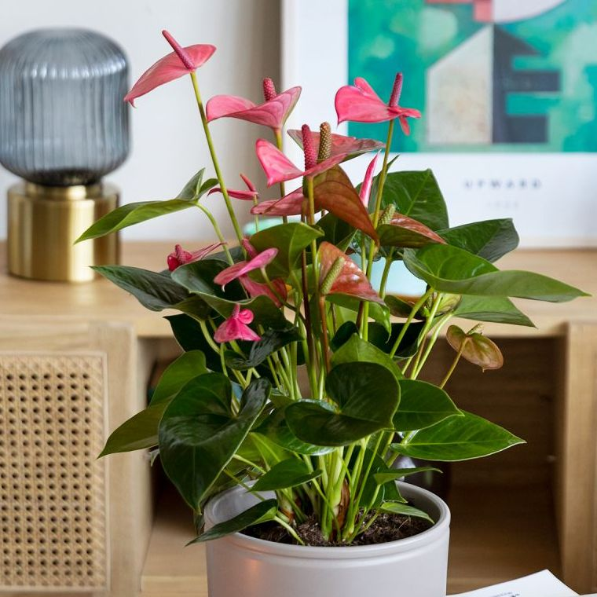

Plantas de interior
Kalanchoe blossfeldiana
Esta es una de las plantas de interior que florecen durante todo el año. Además, tiene muy pocas exigencias para demostrar su esplendor, solo que la reguemos un poco y, sobre todo, que tenga mucha luz. Otra cosa que necesita es estar en un espacio con buena ventilación y sitio suficiente, puesto que puede llegar a los 40 centímetros. ¿Quieres saber si lo estás haciendo bien? Si cuando sus flores se marchitan aparecen flores nuevas es que todo está correcto.

Tóxica para mascotas, evitar su ingesta
Spatiphyllum o espatifilo
Esta planta es llamada científicamente Spatiphyllum, pero coloquialmente tiene varios nombres, como espatifilo, cuna de Moisés o lirio de paz. Se trata de una planta de interior que florece todo el año, tiene unas flores blancas que contrastan mucho con el tono verde oscuro de sus hojas. Es perfecta para interiores, ya que se adapta bien a lugares con poca luz natural y, además, nos ayuda a purificar el aire.
Tóxica para mascotas, evitar su ingesta
Anturio o Anthurium
El anturio es otra de las plantas de interior con flor más populares, siendo muy habitual encontrar sus características flores rojas en muchas casas. Esta planta puede crecer hasta el metro de altura, no obstante, si lo tenemos en maceta no es habitual que supere los 50 centímetros. El anturio tiene una época de floración concreta, durante la primavera y el verano. Para ello, requiere de una serie de cuidados: mucha luz natural pero que no le llegue directamente, protegerlo de las corrientes de aire, regarlo con agua que tenga un pH bajo de 2 a 3 veces semanales. También está la variedad del anturio enano, que aparte de ser más pequeño tiene las flores blancas. Es una planta especialmente bonita, pues el blanco de sus flores contrasta con los distintos colores de verde de su tallo y hojas.
Tóxica para mascotas, evitar su ingesta
Rosal mini
Las rosas son, probablemente, las flores más populares de todo el mundo. ¿Pero sabías que puedes tenerlas en tu casa durante todo el año? Los rosales mini, a diferencia de sus parientes de exterior, tienen flor durante todo el año. Entre los cuidados que necesitan destaca la necesidad de luz abundante, agua moderada y una temperatura que ni pase de 23 ºC ni baje de 10 ºC.

Segura para mascotas
Gardenia
Las gardenias son unas de las plantas de interior con flor todo el año. Es otra de las flores más populares, además, se trata de una planta con un aroma muy peculiar que te puede encantar. Algo que debes saber es que hay gardenias de interior y exterior, siendo las primeras las que necesitas en este caso. Otra cosa a entender es que necesita un riego abundante y mucha luz. Por otro lado, las condiciones de temperatura suelen ser las mismas que las de los rosales mini. Conviene recordar a la hora de cuidar esta planta que es de tierra ácida y hay que vigilar el agua de riego y la tierra en la que la colocamos.
Tóxica para mascotas, evitar su ingesta
Cinta o malamadre (Chlorophytum comosum)
La planta de cintas o malamadre es una planta de interior sin flores muy bonita y resistente que encaja perfectamente en cualquier lugar de tu hogar. Es una planta de interior muy tradicional en los hogares, es muy decorativa y tiene las hojas alargadas.También conocidas como lazos de amor, tienen un atractivo que suele gustar mucho y es que en sus hojas verdes tienen unas líneas amarillas o blanquecinas que llaman mucho la atención. Puedes ponerla tanto a sol como a sombra y, cabe destacar, que se trata de una de esas plantas que purifican el aire, por lo que no puede faltar en tu estancia.